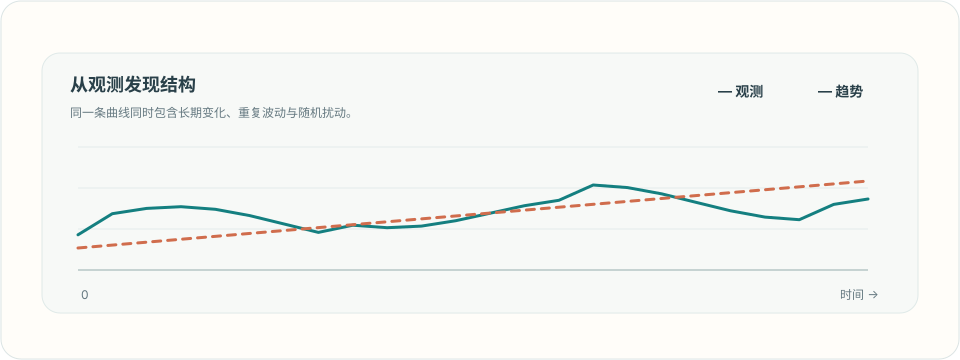

AN OPEN COURSE · TIME SERIES
从观测的时间结构，
走向可信的预测。
不把模型名称当作知识本身。从直观图像出发，经由可核验的公式和小型实验，学习如何认识变化、检验假设，并以不泄漏未来的方式评估预测。
从第一章开始阅读
学习路径，不只是章节列表
先建立信息边界，再选择模型，最后验证系统表现。
理解时间、趋势、平稳性和序列自身的依赖结构。
从回归、频谱到 ARIMA、季节模型与误差评估。
建模条件方差、变量联动、协整与状态空间。
设计时序特征、深度预测、验证机制及系统落地。
课程章节
前十章已完成两批精修，第 11–28 章保留原文，继续逐篇升级。
基础结构
理解时间、趋势、平稳性和序列自身的依赖结构。
认识时间序列
时序数据定义 · 时间序列vs截面数据 · 历史发展(1920sYule→1970sBox-Jenkins→2020s深度学习)
已深度重写 · 查看图解CHAPTER 02时序的组成与分解
趋势/季节性/循环/残差 · 加法模型vs乘法模型 · STL分解
已深度重写 · 查看图解CHAPTER 03平稳性
严平稳vs弱平稳 · ADF检验 · KPSS检验
已深度重写 · 查看图解CHAPTER 04自相关分析
ACF自相关函数 · PACF偏自相关 · 白噪声与Ljung-Box检验
已深度重写 · 查看图解CHAPTER 05指数平滑
简单指数平滑 · Holt线性方法 · Holt-Winters季节性
已深度重写 · 查看图解经典统计预测
从回归、频谱到 ARIMA、季节模型与误差评估。
时间序列回归
时序上的OLS · 虚假回归问题 · Durbin-Watson检验
保留原章 · 继续阅读CHAPTER 07频谱分析入门
时域vs频域 · 傅里叶级数 · 周期图构建与解读
保留原章 · 继续阅读CHAPTER 08自回归模型(AR)
AR(p)模型 · Yule-Walker方程 · 特征根与平稳性条件
保留原章 · 继续阅读CHAPTER 09移动平均模型(MA)
MA(q)模型 · 可逆性条件 · MA与AR的对偶关系
保留原章 · 继续阅读CHAPTER 10ARMA模型
ARMA(p,q) · ACF/PACF截断与拖尾 · Box-Jenkins方法论
保留原章 · 继续阅读CHAPTER 11差分与ARIMA
差分阶数d · ARIMA(p,d,q) · 单位根
保留原章 · 继续阅读CHAPTER 12季节性ARIMA
SARIMA(p,d,q)(P,D,Q)s · 季节性差分 · 季节性ACF/PACF
保留原章 · 继续阅读CHAPTER 13建模实践与诊断
Box-Jenkins完整流程 · 残差诊断 · 参数显著性检验
保留原章 · 继续阅读CHAPTER 14预测与评估
点预测与区间预测 · MAE/RMSE/MAPE/MASE · 预测包络
保留原章 · 继续阅读波动率与多元模型
建模条件方差、变量联动、协整与状态空间。
机器学习与部署
设计时序特征、深度预测、验证机制及系统落地。
时序特征工程
滞后特征 · 滚动窗口统计 · 日历特征与傅里叶项
保留原章 · 继续阅读CHAPTER 20树模型与时序预测
XGBoost/LightGBM/CatBoost · 特征重要性 · 超参数调优
保留原章 · 继续阅读CHAPTER 21Prophet与自动预测
Prophet加法模型 · 变点检测 · Nixtla生态
保留原章 · 继续阅读CHAPTER 22时序交叉验证
扩展窗口vs滑动窗口 · 前向验证 · 清除与禁运
保留原章 · 继续阅读CHAPTER 23循环神经网络
RNN/LSTM/GRU · Seq2Seq架构 · 梯度消失与裁剪
保留原章 · 继续阅读CHAPTER 24卷积与时序
1D CNN · TCN膨胀卷积 · WaveNet
保留原章 · 继续阅读CHAPTER 25Transformer与时序
自注意力机制 · Informer/Autoformer · PatchTST
保留原章 · 继续阅读CHAPTER 26基础模型与扩散模型
TimesFM/Chronos/TimeGPT · 零样本预测 · CSDI/TS-DiT扩散模型
保留原章 · 继续阅读CHAPTER 27生产部署与MLOps
FastAPI/Docker · MLflow模型管理 · 漂移检测
保留原章 · 继续阅读CHAPTER 28综合实战项目
端到端电商预测 · 基线→统计→ML→DL→集成 · 全模型对比
保留原章 · 继续阅读如何使用这套教程？
建议先通读基础模块的图解和代码，再根据项目需求跳读 ARIMA、ETS 或现代预测方法。每次比较模型时，都应固定预测起点、预测步长、基线与评估方法。
本仓库保留已有章节内容；新章节提供来源链接、结构化图示、公式、交互实验及可重复的示例。旧的章节地址也会继续跳转到对应正文。